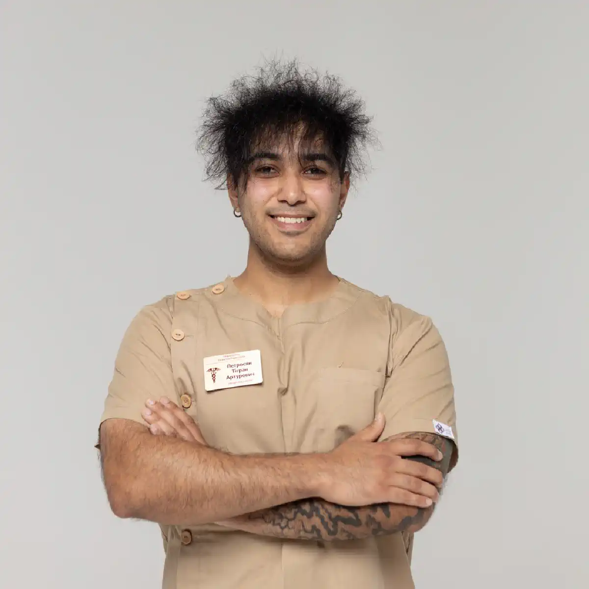

+38(068)
79 72 782
+38(068)
79 72 782Помощь нарколога при запое в Черкассах
Доступная помощь 24/7


Бесплатная консультация, работаем круглосуточно 24/7
Доступная помощь 24/7

Дата написания: 29 июл. 2026 г.
Последнее обновление: 29 июл. 2026 г.
Помощь нарколога при запое в Черкассах может потребоваться, если человек употребляет алкоголь несколько дней подряд, не способен самостоятельно остановиться или после отказа от спиртного у него появляются тремор, тревожность, бессонница, потливость, тошнота и учащённое сердцебиение. В подобных ситуациях важно оценить не только продолжительность употребления, но и общее состояние пациента, наличие хронических заболеваний и риск тяжёлого абстинентного синдрома. Алкогольная зависимость является медицинской проблемой, при которой человеку становится сложно прекратить или контролировать употребление, несмотря на ухудшение здоровья, отношений, работоспособности и других сфер жизни. Запой может быть одним из проявлений тяжёлого расстройства, связанного с употреблением алкоголя. Наркологическая помощь начинается с консультации и осмотра. Врач уточняет длительность запоя, количество выпитого, время последнего употребления, предыдущие эпизоды абстиненции и наличие опасных симптомов. При стабильном состоянии отдельные процедуры могут проводиться дома.
Запоем обычно называют непрерывное или повторяющееся употребление алкоголя в течение нескольких дней, когда человеку становится сложно самостоятельно прекратить пить. При этом очередная доза спиртного часто принимается не для получения удовольствия, а для временного уменьшения тревоги, тремора, слабости, тошноты и других неприятных симптомов. На длительный запой могут указывать употребление алкоголя несколько дней подряд, невозможность самостоятельно остановиться, приём спиртного с утра и постепенное увеличение количества выпитого. У человека может пропадать аппетит, нарушаться сон, появляться тремор рук, потливость, тревожность, тошнота, рвота и выраженная слабость. Нередко возникают учащённое сердцебиение, колебания артериального давления, раздражительность, возбуждение или необычное поведение. После очередной дозы алкоголя самочувствие может временно улучшаться, однако спустя некоторое время неприятные симптомы возвращаются. После резкого прекращения продолжительного употребления может развиться алкогольный абстинентный синдром. Его проявления варьируются от тревожности, бессонницы и тошноты до судорог, галлюцинаций и других потенциально опасных осложнений.
Обычный эпизод употребления заканчивается после того, как действие алкоголя ослабевает. Человек сохраняет способность остановиться и вернуться к привычному образу жизни. При запое контроль над употреблением нарушается: алкоголь принимается повторно в течение нескольких дней, а попытка прекратить пить сопровождается значительным ухудшением самочувствия. Запой нередко поддерживается замкнутым кругом. После снижения концентрации алкоголя появляются тревожность, дрожь, бессонница, потливость и тошнота. Человек принимает новую дозу спиртного, временно ощущает облегчение, но затем симптомы возвращаются. Постепенно усиливаются обезвоживание, дефицит сна, физическое истощение и нагрузка на внутренние органы. Безопасный выход из запоя должен проходить с учётом состояния пациента и риска тяжёлой абстиненции. Повторные запои, потеря контроля, выраженный потяг и продолжение употребления, несмотря на негативные последствия, могут быть признаками алкогольной зависимости. Тяжесть расстройства оценивается врачом по совокупности симптомов, а не только по количеству выпитого или продолжительности одного эпизода.
Помощь нарколога при запое в Черкассах на дому начинается с предварительного уточнения состояния пациента. Во время телефонного обращения родственникам желательно сообщить возраст человека, продолжительность употребления, время последнего приёма алкоголя, основные симптомы, хронические заболевания и препараты, которые он принимает. После приезда врач оценивает уровень сознания и ориентацию пациента, частоту и качество дыхания, артериальное давление, пульс и насыщение крови кислородом. Специалист обращает внимание на наличие тремора, тревожности, возбуждения, признаков обезвоживания, тошноты и рвоты. Также оцениваются вероятность судорог, риск алкогольного делирия и возможность безопасного лечения запоя в домашних условиях. При стабильном состоянии нарколог может начать симптоматическую терапию, направленную на уменьшение проявлений абстиненции и восстановление водно-электролитного баланса. Схема помощи подбирается индивидуально с учётом возраста, продолжительности запоя, сопутствующих заболеваний и результатов осмотра.
Срочный вывод из запоя актуален, если человек не может самостоятельно прекратить употребление, его состояние постепенно ухудшается или после отказа от спиртного появляются выраженные симптомы абстиненции. Не следует ждать планового приёма, если у пациента нарастает тремор, появляется выраженная тревожность или возбуждение, отсутствует сон, возникает многократная рвота, значительно колеблется артериальное давление либо сердцебиение становится очень частым или нерегулярным. Необычное поведение, дезориентация, галлюцинации и судороги также требуют срочной медицинской оценки. При потере сознания, выраженной спутанности, нарушении дыхания, судорогах или сильной боли в груди необходимо немедленно звонить по номеру 103. В подобных ситуациях ожидание обычного выезда нарколога может быть опасным. Срочный вывод из запоя обращения не означает, что пациента обязательно будут лечить дома. После оценки симптомов специалист определяет безопасный формат помощи. При высоком риске осложнений требуется госпитализация.
Вывод из запоя на дому в Черкассах может проводиться, если пациент находится в сознании, самостоятельно дышит, способен отвечать на вопросы и не имеет признаков тяжёлой абстиненции. Перед началом процедур врач должен оценить состояние человека и исключить ситуации, при которых домашний формат является небезопасным. Первоначальная задача заключается не в мгновенном «очищении крови», а в контролируемом прекращении употребления, уменьшении абстинентных проявлений, коррекции выявленного обезвоживания и предупреждении осложнений. Помощь может включать медицинский осмотр, контроль артериального давления, пульса и сатурации, инфузионную терапию при наличии показаний, восполнение электролитов, витаминную поддержку и симптоматическое лечение. Во время процедуры врач наблюдает за реакцией организма, а после её завершения предоставляет рекомендации на последующие дни. Состав терапии нельзя определять только по длительности запоя. Препараты подбираются с учётом состояния сердца, печени, почек, нервной системы, уровня артериального давления и лекарственных средств, которые пациент уже принимал. Вывод из запоя является первым этапом, но не полноценным лечением зависимости. Купирование абстинентного синдрома подготавливает пациента к дальнейшей терапии, однако само по себе не устраняет потяг к алкоголю и риск повторного употребления.
Стоимость выведения из запоя на дому в Черкассах начинается от 2199 грн.
| Популярные услуги | Цена |
|---|---|
| Нарколог Черкассы | От 1500 грн |
| Капельница от алкоголя | От 2199 грн |
| Вывод из запоя на дому | От 2199 грн |
| Кодирование от алкоголя | От 6000 грн |
Алкогольный абстинентный синдром развивается после прекращения или значительного уменьшения употребления у человека, организм которого адаптировался к регулярному поступлению алкоголя. Это состояние отличается от обычного похмелья и может постепенно усиливаться. К распространённым проявлениям относятся тревожность, раздражительность, тремор рук, пітливость, бессонница, слабость, головная боль, тошнота и рвота. У пациента также могут возникать учащённое сердцебиение и повышение артериального давления. Тяжёлое течение может сопровождаться судорогами, галлюцинациями, выраженной дезориентацией и алкогольным делирием. Резкое прекращение длительного употребления способно привести к потенциально опасному синдрому отмены, поэтому осмотр врача особенно важен при повторных запоях и предыдущих осложнениях. Лечение алкогольного абстинентного синдрома подбирается после осмотра. Врач оценивает выраженность симптомов, риск судорог, состояние сердечно-сосудистой системы и наличие сопутствующих заболеваний. Самостоятельно принимать сильнодействующие снотворные, транквилизаторы, нейролептики или сердечные препараты нельзя. Их неправильное сочетание с алкоголем и другими лекарственными средствами может привести к чрезмерной сонливости, снижению артериального давления и угнетению дыхания.
Детоксикация организма после запоя направлена на стабилизацию состояния пациента и коррекцию нарушений, возникших на фоне употребления. Она не способна за несколько минут полностью удалить алкоголь и продукты его распада из организма. Этанол перерабатывается преимущественно естественными ферментными системами. Инфузионная терапия может применяться для восполнения жидкости и электролитов, если врач выявил обезвоживание или другие медицинские показания. Капельница также может использоваться для контролируемого введения назначенных препаратов. Перед детоксикацией врач учитывает длительность и интенсивность употребления, время последнего приёма алкоголя, количество эпизодов рвоты, показатели артериального давления и пульса, состояние сознания, наличие отёков, заболевания сердца и почек, а также препараты, которые пациент уже принимает. Избыточное введение жидкости подходит не всем. При сердечной или почечной недостаточности необоснованная инфузионная нагрузка может быть опасной. Поэтому состав и объём капельницы определяются индивидуально.
Нарколог в Черкассах может приехать по адресу ориентировочно в течение 40 минут после подтверждения вызова. Фактическое время зависит от района города, дорожной ситуации, погодных условий, загруженности врачей и необходимости выезда в область. Чтобы не задерживать организацию помощи, во время звонка желательно заранее сообщить точный адрес, возраст пациента, длительность запоя, время последнего употребления, основные симптомы, наличие судорог или галлюцинаций, хронические заболевания и препараты, уже принятые пациентом. Если человек потерял сознание, редко или затруднённо дышит, у него начались судороги либо появилась сильная боль в груди, нельзя ожидать обычного выезда нарколога. В таких случаях необходимо сразу вызвать экстренную медицинскую помощь по номеру 103.
Продолжительность вывода из запоя дома определяется индивидуально. Первичный осмотр и проведение назначенной процедуры могут занять от одного до нескольких часов, однако полное восстановление после продолжительного употребления обычно требует больше времени. На продолжительность помощи влияют количество дней употребления, объём выпитого алкоголя, возраст пациента, выраженность абстиненции и степень обезвоживания. Также учитываются состояние печени, почек и сердца, качество сна и питания, наличие хронических заболеваний и предыдущие эпизоды тяжёлого синдрома отмены. После процедуры пациент может ощущать слабость и сонливость. Улучшение отдельных симптомов не означает, что организм полностью восстановился. Врач может рекомендовать наблюдение, повторную консультацию, дополнительное обследование или продолжение лечения в стационаре. Если после домашней помощи состояние ухудшается, появляются судороги, галлюцинации, выраженная спутанность сознания, одышка или постоянная рвота, необходимо обратиться за экстренной медицинской помощью.
Помощь при запое возможна на дому, если пациент находится в относительно стабильном состоянии. Он должен сохранять сознание, самостоятельно дышать, адекватно отвечать на вопросы и добровольно принимать медицинскую помощь. Домашний формат может рассматриваться при неосложнённом абстинентном синдроме, если отсутствуют признаки высокого риска и рядом находится взрослый человек, способный наблюдать за состоянием пациента и выполнить рекомендации врача. Лечение запоя в стационаре требуется при судорогах, галлюцинациях, алкогольном делирии, выраженной дезориентации, нарушении или угнетении дыхания и потере сознания. Госпитализация также необходима при сильной боли в груди, неукротимой рвоте, тяжёлом обезвоживании, резком ухудшении хронического заболевания, выраженной агрессии, психозе или отсутствии безопасных условий для наблюдения. Тактика лечения зависит от риска осложнений и доступного уровня наблюдения. При нарастании симптомов пациент должен быть переведён на более высокий уровень медицинской помощи.
Плановый вывод из запоя и другие медицинские процедуры должны проводиться после получения информированного согласия пациента. Человеку необходимо объяснить предполагаемую наркологическую помощь, возможные ограничения и необходимость дальнейшего лечения. Родственники могут вызвать нарколога для оценки состояния и проведения мотивационной беседы, но не должны пытаться тайно добавлять препараты в еду или напитки. Такое применение лекарств непредсказуемо и может привести к опасному взаимодействию с алкоголем. Если человек отказывается от лечения, близким рекомендуется разговаривать с ним в спокойном состоянии, не унижать и не угрожать, а приводить конкретные примеры последствий запоя. Можно предложить сначала пройти консультацию врача, а не сразу соглашаться на длительное лечение. Родственникам также важно установить личные границы, не давать деньги на алкоголь и не скрывать последствия поведения зависимого человека. Медицинское вмешательство без согласия может проводиться только в предусмотренных законом неотложных ситуациях, когда существует непосредственная угроза жизни, а получить согласие пациента по объективным причинам невозможно.
Анонимная помощь нарколога при запое позволяет обратиться за консультацией и лечением конфиденциально. Медицинская информация о состоянии пациента, диагнозе и назначенных процедурах не должна разглашаться посторонним лицам без законных оснований. Домашний формат помогает избежать необходимости самостоятельно приезжать в клинику в состоянии слабости, тревожности или выраженной абстиненции. Врач приезжает по указанному адресу, проводит осмотр и определяет безопасную тактику помощи. Конфиденциальность не означает, что от врача можно скрывать важные сведения. Необходимо честно сообщить, сколько дней продолжается употребление, какое количество алкоголя принималось, когда была последняя доза и какие лекарства уже использовались. Важно также рассказать о хронических заболеваниях, предыдущих судорогах, алкогольном делирии и возможном употреблении других психоактивных веществ. Недостоверная информация может затруднить диагностику и повысить риск нежелательного взаимодействия препаратов.
Помощь нарколога при запое у военнослужащих должна учитывать не только последствия употребления алкоголя, но и общее психологическое состояние человека. Запои могут сочетаться с хроническим стрессом, нарушениями сна, тревожностью, раздражительностью, хронической болью и последствиями травматического опыта. Во время консультации врач уточняет продолжительность употребления и симптомы абстиненции, а также оценивает сон, эмоциональное состояние, последствия перенесённых травм и наличие сопутствующих заболеваний. Алкогольная зависимость не является признаком слабости характера или отсутствия дисциплины. Это медицинская проблема, при которой человеку становится сложно контролировать употребление, несмотря на негативные последствия. Современный подход предполагает уважительное общение, снижение стигмы и подбор комплексного лечения. Если у военнослужащего после прекращения употребления ранее возникали судороги, галлюцинации, выраженная дезориентация или алкогольный делирий, обычного домашнего визита может быть недостаточно. Врач должен оценить необходимость капельницы от алкогольной интоксикации и стационарного наблюдения.
Лечение алкогольной зависимости после детоксикации необходимо, поскольку улучшение самочувствия не означает исчезновение потяга к спиртному. После выхода из острого состояния человек может снова начать употреблять алкоголь под воздействием стресса, бессонницы, конфликтов или привычного окружения. Дальнейшая программа лечения алкогольной зависимости может включать консультации нарколога, психотерапию, мотивационную работу и медикаментозную противорецидивную терапию. При необходимости проводится лечение тревожности и нарушений сна, определяются провоцирующие факторы, подключается поддержка родственников и составляется план профилактики срывов. При тяжёлой зависимости может быть рекомендована реабилитационная программа. Для лечения расстройства, связанного с употреблением алкоголя, применяются поведенческие методы, лекарственная терапия, программы взаимной поддержки или их сочетание. Выбор зависит от состояния пациента, целей лечения и медицинских противопоказаний. Кодирование может использоваться как один из элементов противорецидивной программы, но не заменяет работу с психологическими причинами употребления. Процедура проводится добровольно, после консультации и достижения трезвого состояния.
Выезд нарколога организуется по Черкассам и населённым пунктам Черкасской области. В пределах города врач может прибыть ориентировочно в течение 40 минут. При выезде за пределы Черкасс время и стоимость зависят от расстояния и дорожной ситуации. Во время оформления вызова необходимо указать населённый пункт, точный адрес и контактный номер телефона. Также следует сообщить возраст пациента, продолжительность запоя, основные симптомы, наличие хронических заболеваний и время последнего употребления алкоголя. По прибытии врач проводит осмотр и решает, можно ли начать лечение дома. Если состояние пациента представляет угрозу для жизни или требует постоянного мониторинга, рекомендуется госпитализация. Срочная наркологическая помощь не должна задерживать обращение в экстренную службу при потере сознания, нарушении дыхания, судорогах, сильной боли в груди или выраженной спутанности сознания. Такие состояния требуют немедленного звонка по номеру 103.
Доступная наркологическая помощь в Черкассах включает консультацию врача, оценку состояния, лечение неосложнённого абстинентного синдрома, вывод из запоя на дому, детоксикацию по медицинским показаниям и рекомендации по дальнейшему лечению алкогольной зависимости. Перед проведением процедур оцениваются возможные противопоказания и риск осложнений. Одна и та же схема не может быть безопасной для каждого пациента, поэтому лечение подбирается индивидуально. Главная задача помощи заключается не только во временном уменьшении тремора, тревожности, тошноты и слабости. После стабилизации состояния важно продолжить лечение зависимости, определить причины повторных запоев и составить план профилактики срывов.
Телефон для консультации и вызова нарколога в Черкассах: +38(050-021-69-57)

Статья проверена экспертом
Робулец Ольга
Врач нарколог, ординатор
Возможно интересная статья:
Лекарство вызывающее отвращение к алкоголю

Да, мы строго соблюдаем полную конфиденциальность на всех этапах лечения. Информация о пациенте, диагнозе и прохождении терапии не передаётся третьим лицам. Обращение к нам не влечёт постановку на учёт. Вы можете быть уверены в безопасности и анонимности.
Программа лечения разрабатывается индивидуально после консультации со специалистом. Учитываются вид зависимости, её длительность, физическое и психологическое состояние пациента. Такой подход позволяет повысить эффективность терапии и снизить риск срыва. Мы не используем шаблонные решения.
Да, мы сопровождаем пациентов и после основного курса лечения. Проводятся консультации, рекомендации по адаптации и профилактике рецидивов. При необходимости возможна дальнейшая психологическая поддержка. Это помогает сохранить результат и вернуться к полноценной жизни.
Анонимно

Ну в хлопців просто золоті руки й світла голова, мене капали Олексій та Владислав, буквально за декілька сеансів я наче заново народився, до цього пив більше 3х тижнів, не міг зупинитись, дуже радий що знайшов саме цих спеціалістів, всім рекомендую
Анонимно
В течение нескольких лет я злоупотреблял алкоголь, что привело к увольнению с работы и вызвало у меня мысли о суициде. Понимая, что такой образ жизни неприемлем, я обратился за помощью в клинику “Амбрела”. Здесь я смог преодолеть свою зависимость от спиртного благодаря заботливым и опытным врачам, а также эффективной системе лечения. Спустя более года я полностью избавился от желания употреблять алкоголь, и теперь моя жизнь вернулась в норму. Я даже не приближаюсь к спиртному! Благодарю врачей клиники “Амбрела” за их помощь и заботу.
Анонимно
Я обращался за помощью в различные клиники, пытаясь избавиться от своей зависимости от алкоголя, но без особых успехов. Никак не мог справиться с желанием прибегнуть к бутылке, пока друг не посоветовал мне обратиться в центр “Амбрелла”. Я записался на прием и был поражен заботливым отношением к пациентам. Уже прошло два года, и теперь я смотрю на алкоголь с абсолютной равнодушием, активно занимаюсь спортом и улучшил отношения в семье. Благодаря центру “Амбрелла” моя жизнь была спасена от алкогольной зависимости!
Анонимно
Хочу выразить свою благодарность врачам из центра алкоголизма “Амбрела” за то, что они буквально спасли мою жизнь. В течение последнего года я сильно увлекался питьем, и все это привело к катастрофическим последствиям. Хотя я ходил на терапевтические сеансы, но безрезультатно. Тогда я нашел адрес клиники “Амбрела” в интернете, изучил отзывы и информацию о центре, и записался на прием. Там мне сразу предложили методику лечения, которая помогла не только справиться с физической ломкой, но и психической зависимостью от алкоголя. Не буду распространяться, скажу только одно - после пребывания в этой клинике я стал другим человеком, и навсегда забыл, что такое привкус алкоголя. Больше меня не тянет на это! Я искренне верю, что в центре “Амбрела” трудятся настоящие целители душ!
Анонимно
После сложного развода мой сын начал подавлять свою обиду и горе употреблением алкоголя. Он старался скрывать это от меня, но я, как мать, почувствовала, что что-то не так. В конечном итоге, ситуация стала критической. Моя знакомая посоветовала мне обратиться в клинику “Амбрела”. Я была приятно удивлена их работой! Они помогли сыну преодолеть очередной период злоупотребления алкоголем, и с тех пор прошел уже более года, и он совсем не пьет.
Анонимно
Благодаря вашей помощи, моя семья была спасена. Я с трудом уговорила мужа начать лечение, и последний каплей был пьяное ДТП. К счастью, в аварии никто не пострадал, но это был для него сигнал к действию. Он наконец согласился пройти курс лечения на дому, в стационар не хотел ложиться. Лечение было трудным, и были моменты, когда срыв был настолько близок, но благодаря вашему центру Амбрелла мы справились с этим.
Анонимно
Для меня эта клиника стала настоящим спасением! Долгое время я упорно отказывался от лечения, уверен был, что со мной все в порядке. Но к счастью, семья уговорила меня попробовать. И сегодня я чувствую себя невероятно счастливым, осознавая, что мне абсолютно не нужен алкоголь. Огромное спасибо за помощь и поддержку, которые я получил здесь! Я благодарен вам за новую возможность жить полноценной и счастливой жизнью!
Анонимно
Выражаю благодарность ребятам, которые оказали мне помощь и не отвернулись. Уже 10 месяцев я остаюсь чистой. Благодарю за то, что помогли найти новый путь в моей жизни.
Номер телефона:
+380 (68) 797 27 82
+380 (50) 021 69 57
Адрес наркологического центра вашего города уточняйте по
телефону
Работаем в: Киеве, Одессе, Львове, Харькове, Днепре,
Запорожье, Черкассах, Чугуеве, Черноморске, Каменском
Telegram: t.me/umbrellaplus
График работы: Круглосуточно